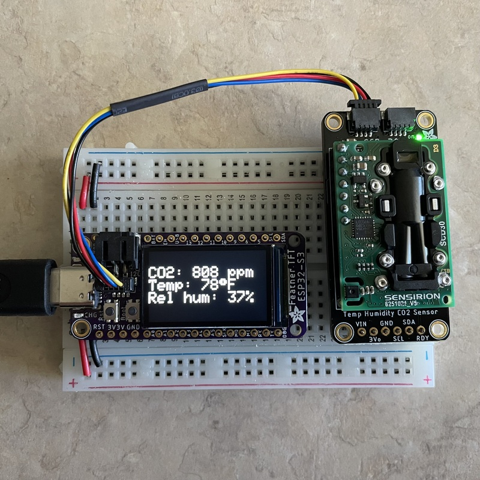

I was excited by our initial success at a low-cost carbon dioxide monitor, so much so that I was immediately thinking about how to scale things up, and how to get more data and in a less cumbersome way.
Our initial build just has a CO2 sensor, a simple Arduino microcontroller, and an LCD display. It shows the current CO2 concentration plus the maximum and average since it was last turned on. To gather data, we need people to write down those values (or take a picture) before they turn it off.
What could we do to gather more detailed data, without increasing the cost of the device? For about $3, we could add a SD card logger. But that would mean pulling out SD cards regularly. And wouldn’t we need to include a clock?
How about using wifi? I had just bought a little ESP32-S3 TFT feather (mostly because they showed it in use with the SCD-30 CO2 monitor, and it just seemed really cool with the built-in high-resolution display). These ESP32 microcontrollers have built-in wifi (and bluetooth). And then I realized that if we logged data to a google sheet via a google form, we wouldn’t need to worry about time, because google would time-stamp all of the entries for us.
Surprisingly, I could get this ESP32 up and running with the SCD-30 sensor, logging data to google sheets, and connected to wifi, and then even connected to wifi at the university using eduroam. It was just 4 hours work or so, and there very few road blocks.
ESP32 with SCD-30
The first thing was to get the ESP32-S3 TFT feather up and running and connected to the SCD-30 sensor. I’m going to use the Arduino IDE to program it.
This was straightforward using the tutorials at Adafruit. The tutorial on ESP32-S3 TFT feather explains the basics, though actually the tutorial for the previous version, ESP32-S2, is more complete and overall more helpful. Key steps include adding an additional Boards Manager URL in the Arduino IDE preferences, and then downloading a number of extra libraries, including the Adafruit ST7735 and ST7789 library for the built-in TFT and the Adafruit SCD30 library for the sensor.

I’d bought a STEMMA QT cable which made the connection between the board and the sensor particularly simple. And combining the example for the SCD-30 sensor and the example for the built-in TFT display, it was up and running super-quick. But note that the SCD-30 CO2 sensor is more expensive than the SenseAir S8 sensor I’ve been using, and it seems to be giving measurements that are too high.
Google forms to gather data
We’ve been using a google form to gather requests for our lending library of CO2 monitors; the results are collected in a google sheet. I’d not done this myself, but it seemed like a great option for collecting data from sensors, and so that’s where I started.
This instructable spelled out the details quite well. They use pushingbox as an intermediary between the arduino and the google form. (It’s not entirely clear to me why; maybe to turn an https request into an http one?) But the rest of it was quite clear.
The basic steps are to set up a google form, grab the super-long ID for the form, grab the weirdly-named key identifiers for the form elements, and then working out the REST API request that we will use to push data to the form.
First, go to Google Docs and click on the
hamburger button (i.e., the button with the three lines) in the top-right, and click
Forms, then start a new blank form. Give it a name, create a first
question (as just the variable name you want in the column in the
final spreadsheet), select Short answer in the drop-down menu, and
then click the plus sign in the circle on the far right to create
another field, or click the Send button on the top-right when you’re
done. You don’t really need to send it to anyone, but grab the full
link to the form, which includes (after forms/d/e) the super-long
form ID that you’ll need.
Next, open the form in Firefox and click Ctrl-Shift-I to open the
“Inspector”. Then poke through the html to find the <form> element.
If you poke around inside there, you’ll find the <input> elements.
You’re looking for their names, as they have the field names that
google uses, and which you will use when you want to post data
programmatically. They’ll look something like this:
<input type="hidden" name="entry.1240506587" value="">
<input type="hidden" name="entry.1745392992" value="">
You want to save those entry.### names.
You can now use the web browser to post data to the form, like this:
https://docs.google.com/forms/d/e/SUPER_LONG_FORM_ID/formResponse?submit=Submit&usp=pp_url&entry.1240506587=my_first_entry&entry.1745392992=my_second_entry
You replace the SUPER_LONG_FORM_ID with your actual super long form
identifier, and then the entry.### fields and the values you want
to post. This is what we’ll use when we post data from the
microcontroller, though first we need to get it connected to wifi. So
we’ll come back to this in a moment.
But before connecting to wifi, go to your form at https://forms.google.com and you’ll find three tabs: Questions, Responses, and Settings. If you click Responses, there’s a little green box with a white cross in it; click that to create a spreadsheet to collect your results.
Wifi
Connecting this ESP32 microcontroller to my home wifi was super easy. Adafruit has a straightforward example on github.
The basics are to define character strings with the SSID and password
for your wifi. I put these as defined values in a private.h file to
keep them out of the code that I post to github.
Use #include <Wifi.h>, and Wifi.begin(ssid, password) to connect,
with WiFi.status(), WiFi.SSID() and WiFi.localIP() to give you
information about how it’s working. Also WiFi.RSSI() to get signal
strength.
Pushing data to google
If you look at that Adafruit Wifi example, it includes an example GET request. That’s basically what we want to use to push data to our google form. But google wants an SSL connection (https rather than just http) which adds one small difficulty: you need to grab google’s SSL certificate and include it within your code. (I followed this tutorial for the root CA certificate business.)
First, go to the google forms site in Firefox, https://forms.google.com,
and click on the little lock by the URL. Click Connection secure and
then More information. Then under Security, click View
certificate. Click the tab that’s like GTS Root R1 and then scroll
down to Miscellaneous and click PEM (cert) next to Download. This
saves a .pem file that is the text of the certificate. Paste that
into your sketch, adding a bunch of double-quotes and newlines and
crap, to create a character string containing the full certificate, as
in my Arduino sketch for this
project.
To push data to the form, you can follow the WifiClientSecure example with arduino-esp32 on github.
You use WifiClientSecure client; to define the object that will
be the connection to a web server. You use
client.setCACert(root_ca); to use the root certificate that you’d
downloaded. You build up a character string with the URL for the GET call to send data to the
google form, and then use client.connect(api_host, httpPort) to
connect to the google server, client.print() to dump your form data,
and client.stop() to close the connection.
Make sure to control how often data gets posted, say once a minute, or once every two or five minutes. Mess this up and you can find yourself posting data thousands of times per second and then getting banned by google.
Once you’ve gotten things going, go to your google sheet for the responses to your form and watch your data accrue.
Eduroam
So the last thing, and the one that I expected to have the most trouble with, was connecting to Wifi at my university, which uses eduroam. An advantage here is that, if I can get the device to connect, it will be able to connect in any building on campus. The disadvantage is that whenever I get a new linux laptop, it seems a bit of a mess to get it to connect to eduroam.
Happily though, in this case it was surprisingly easy. I was able to
follow the WifiClientEnterprise
example,
and I didn’t need any sort of certificate file at UW-Madison, but
just the EAP_USERNAME and EAP_PASSWORD, which I again defined in the
private.h file not included in the github repository.
I was able to connect to wifi at work via eduroam just as easily as I was able to do so on my home network. But your company or university setup may be more complicated and difficult. Consider this repository, and also this one, which also has an accompanying youtube video tutorial.
Next steps
So I was able to show that I could measure CO2 levels and use a wifi connection and a google form to push the data to a google spreadsheet. But the particular microcontroller and sensor I was using here are too expensive to put into broad practice. Instead, I want to be able to substitute a simple wifi-enabled microcontroller into the small build that I already have, and as cheaply as possible.
Probably I’ll end up going with a relatively generic ESP32 microcontroller; it seems like you can get them for about $6 each if you buy a multi-pack. But I’m also interested in the Arduino Nano 33 IoT and the Arduino Nano RP2040 Connect. They’re more expensive but could more easily be fit into my existing boxes. The Raspberry Pi Pico W seems like it could also work, but it also seems like it’ll be quite a different toolchain for the software development aspects. I could also go with the cheapest route, of an ESP8266, though the tutorial on eduroam at U Michigan suggested that they could get eduroam working on the ESP32 but not on the ESP8266.
If I go with the ESP32, the first steps will be connecting to my SenseAir S8 sensor and LCD display. If I can get those to work, then I’m confident that the rest will follow (connecting to wifi and pushing data to the google form).